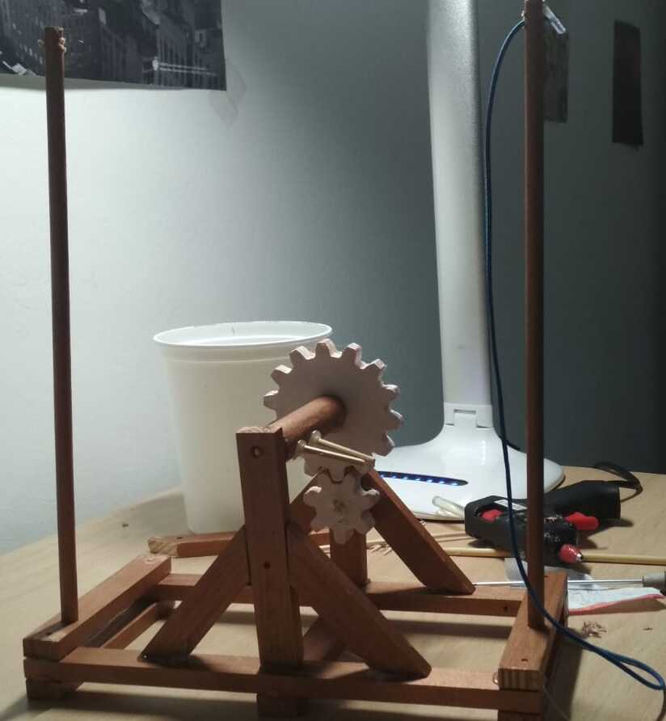

Memoria descriptiva
Hecha por Andres y Victor
Paso 1Lo primero que hicimos fue cortar el trozo de madera de la imagen con un angulo de 45º desde una esquina. |
|
Paso 2Lo siguiente que hicimos fue empezar a montar la base con un poco de silicona. |
 |
Paso 3Una vez acabada la base, montamos la parte central:1ero: El palo del centro apuntando hacia un lateral. 2ndo: Los palos de soporte. 3ero: repetir el paso 1 i 2 en el otro lado. 4rto: poner el palo central en medio de la construcción montada en el paso 1,2 y 3. Con los engranajes. 5nto: poner dos palos pequeños en el centro del palo central con silicona. |
|
Paso 4Continuamos la construccion montando un palo largo y grueso en el lateral. Arriba del palo, en el agujero, pusimos una cuerda. |
|
|  | Paso 5Seguidamente, hicimos lo mismo del paso 4 pero en el otro lado. |
Paso 6Finalmente, conectamos las dos cuerdas al palo grueso del centro y acabamos de montar la catapulta. |